Jake Steinberg · Cartographer
One map,
drawn five ways
Five basemap styles I designed for the Minnesota Star Tribune, running here on the same vector tiles of Minnesota. Switch styles, then zoom from the whole state down to a single street. Five basemap styles I designed for the Minnesota Star Tribune, live on one set of vector tiles of Minnesota.
Live · MapLibre GL 5.24 · Protomaps vector tiles · Ctrl/⌘ + scroll or two fingers to zoom
Star Tribune basemap styles · 2025–2026
One schema, five jobs
A newsroom basemap sits under stories that want opposite things. A hiking guide wants contours and trail names. A precinct map wants the land to get out of the way. All five Star Tribune styles read the same data schema (Protomaps roads, water, land use, places, buildings and boundaries) from the same Minnesota tile archive. Each one runs to 121–125 layers, and between 40 and 80 of them draw. The rest are switched off because that style’s job doesn’t need them.
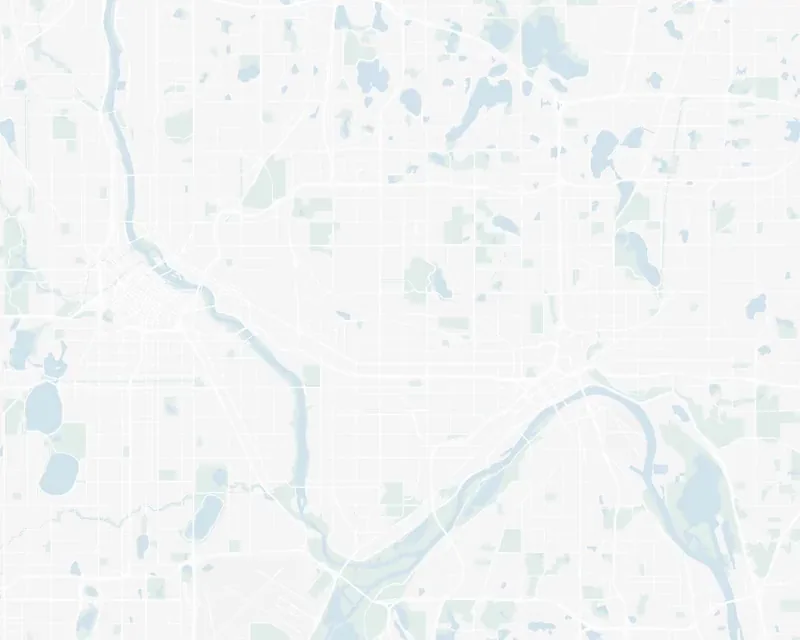
Light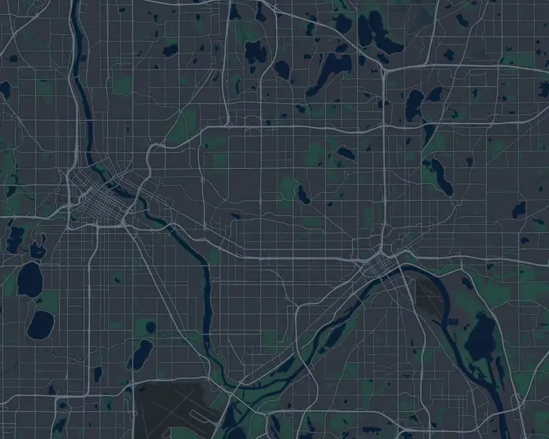
Dark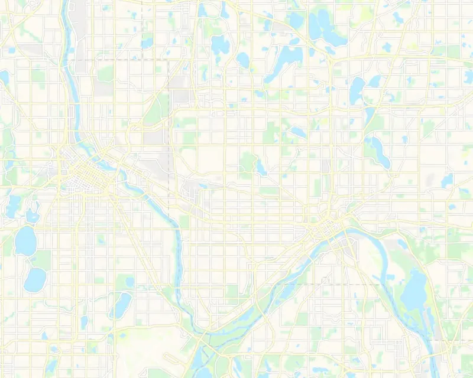
Outdoors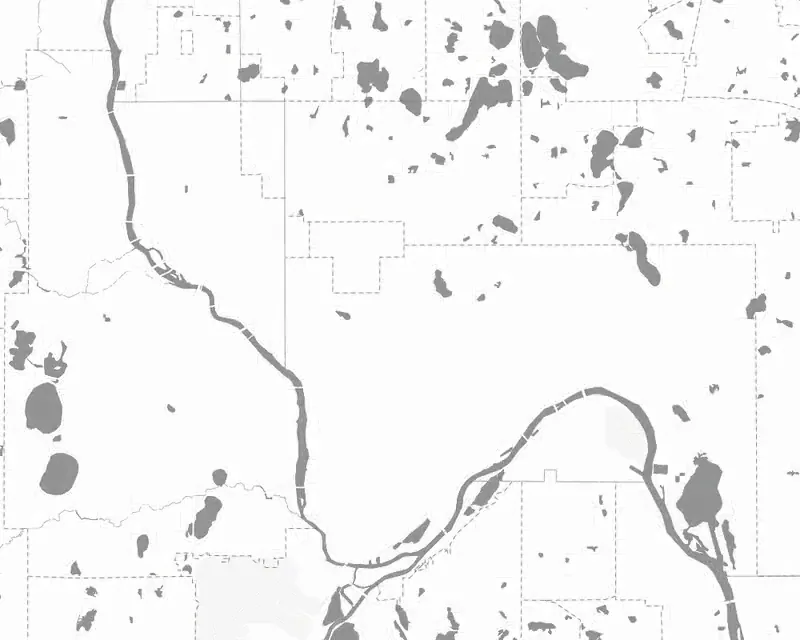
Elex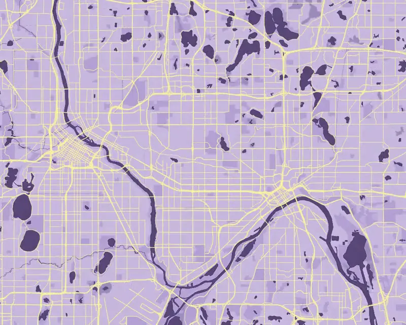
Paisley
Colour follows the job. Outdoors sits on warm paper (#fffbf4) with pale blue water (#c0efff), and adds 10 m and 50 m contours from their own tile archives, dashed green trails and peaks. Dark drops to slate (#313740) with deep navy water (#0f1e35).
Elex takes the colour out of the land entirely: white ground, grey water (#949494) and every land-cover fill switched off, so the data on top owns the hue. Paisley, a one-off for the 10th anniversary of Prince’s passing, puts lavender land (#C8B9DF) and purple water (#5a4979) under yellow roads (#FFF2A3).
Strib Light
- Background#f7f7f7
- Water#d4e4ef
- Parks#e3efec
- Forest#e3efec
- Wetlandoff
- Highway#FFFFFF
- Casingoff
- Buildingsoff
Strib Dark
- Background#313740
- Water#0f1e35
- Parks#264e43
- Forestoff
- Wetland#1a3040
- Highway#667482
- Casing#222a32
- Buildings#3a4150
Strib Outdoors
- Background#fffbf4
- Water#c0efff
- Parks#DCF7D9
- Forest#d4f5d1
- Wetland#F1FECC
- Highway#FFF9D1
- Casing#C8CCD0
- Buildings#e8e4dc
Strib Elex
- Background#ffffff
- Water#949494
- Parksoff
- Forestoff
- Wetlandoff
- Highway#FFFFFF
- Casing#DADADA
- Buildingsoff
Strib Paisley
- Background#C8B9DF
- Water#5a4979
- Parks#b4a1d4
- Forestoff
- Wetland#9c8cba
- Highway#FFF2A3
- Casingoff
- Buildings#E3DBF0
In the wild
Where is Uptown? (2025) asked readers to draw their own boundaries for the Minneapolis neighborhood. The call-out is one of the stories that ran on Strib Light. It won three SND Awards of Excellence in 2026: Infographics; Line of Coverage; and Use of Multimedia and Design Elements.
Terrain
The world in relief
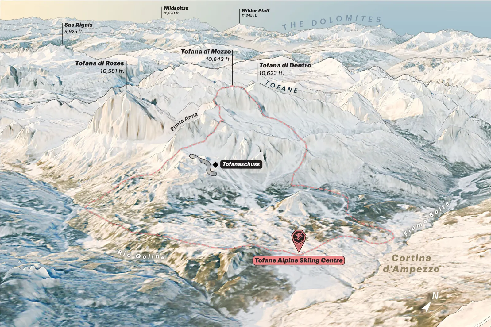
Lindsey Vonn’s Mountains
A biography of Lindsey Vonn published in the run-up to the 2026 Winter Olympics, told by the mountains that made her. Six places on two continents (Lake Louise, Whistler and Buck Hill in North America; Åre, Cortina and Schladming in Europe), drawn as oblique terrain maps that share one lettering system: peak labels on leader lines with elevations, dashed resort boundaries, and a north arrow turned to the view. [[PLACEHOLDER: one sentence on how the six were made — software, elevation and imagery sources, vertical exaggeration — and confirm you made all six]]
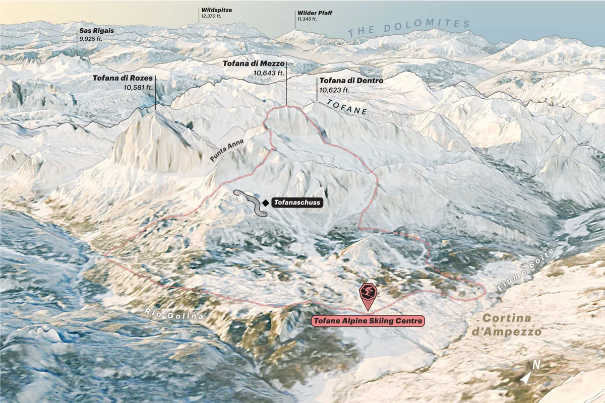
Cortina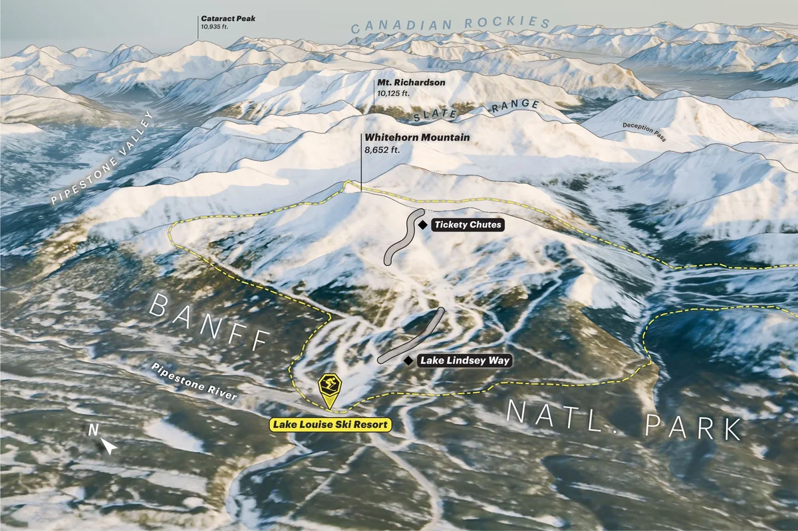
Lake Louise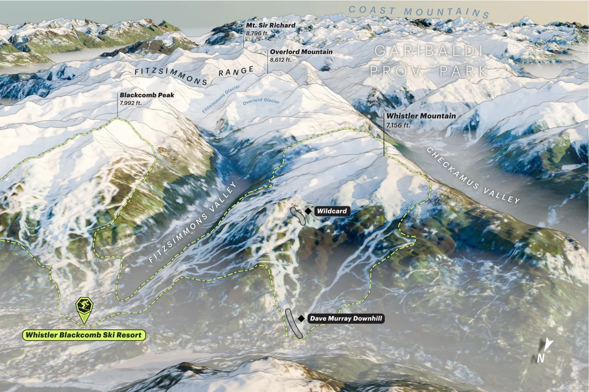
Whistler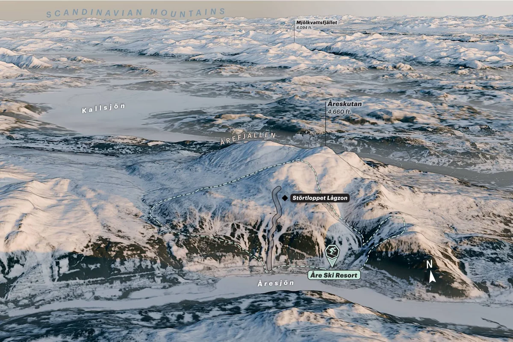
Åre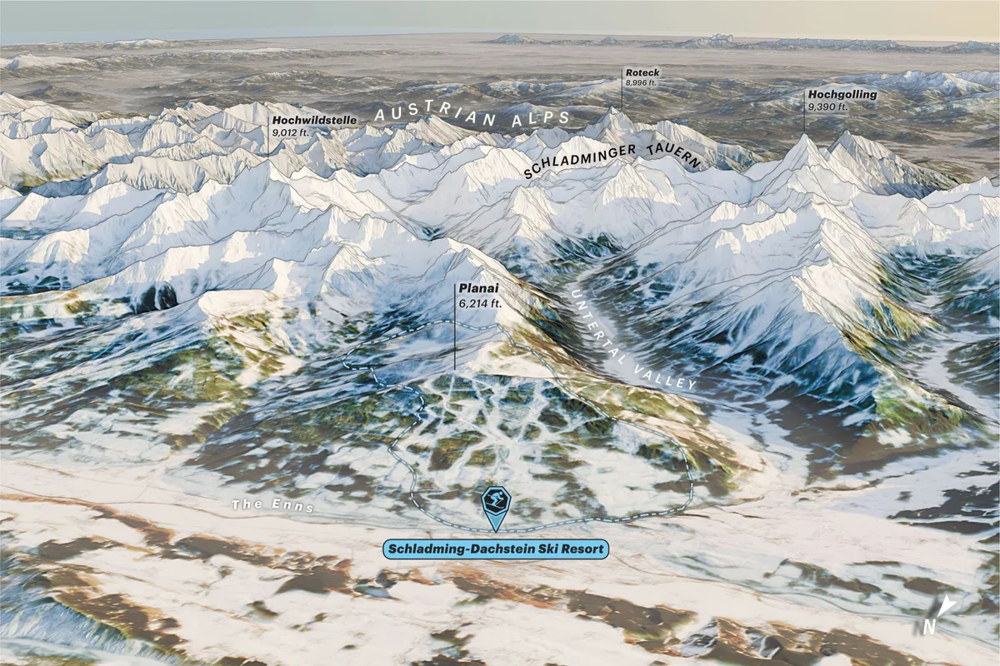
Schladming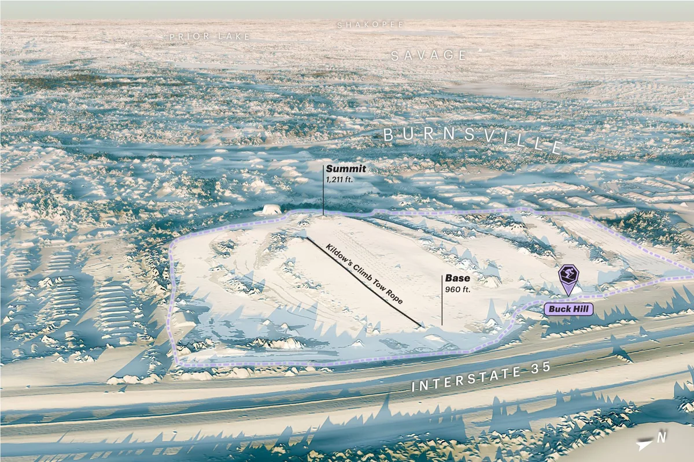
Buck Hill

Rincon Mountains
A golden hour rendering of Saguaro National Park’s Rincon Mountains made to commemorate a trip with an old friend.
Cloud Peak Wilderness
A gift given to friends I shared a great trip with: Wyoming’s Bighorns in perspective, lettered peak by peak and lake by lake. As the map itself says, “Scale varies in this perspective.”
These are still images, made for print and the web.
Elevation as data, seen from above
-
Relative elevation · 2026 A 2-page spread in my book that exposes the writhing and rambling of the Minnesota River, coloured by elevation above river level, from the river itself to 10 ft.
-
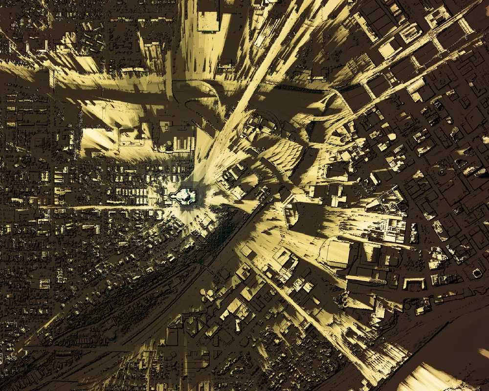
Viewshed · 2026 A divinely inspired GIS viewshed analysis that appears in my book: how much of the Cathedral of Saint Paul can I see from this spot?
-
Shaded relief + land cover · 2023 Stylized land cover and elevation data for a sweeping wall map of the Driftless Area, 8,571 × 11,999 pixels at full size.
Scale
Designing for every zoom
The styles ask for tiles up to zoom 14 and keep drawing to zoom 24 by enlarging that data. Past 14, line weight and label size carry the hierarchy, not new detail. In Outdoors, the 10 m and 50 m contours both draw from zoom 11. The 50 m index lines are darker and heavier (#A7ADB4, 0.375 to 0.6 px) than the 10 m lines (#C8CCD0, 0.2 to 0.5 px). Building footprints and trails start at zoom 13.
All 80 layers
| Layer | Data layer | Zooms | Range |
|---|---|---|---|
| background | Background | 0–24 | |
| landuse_industrial | Land use | 5–24 | |
| landuse_forest | Land use | 5–24 | |
| landuse_park | Land use | 5–24 | |
| grass | Land use | 10–24 | |
| wetland | Land use | 5–24 | |
| trees | Land use | 10–24 | |
| landuse_beach | Land use | 5–24 | |
| landuse_urban_green | Land use | 13–24 | |
| contours_50m | Contours, 50 m | 11–24 | |
| contours_10m | Contours, 10 m | 11–24 | |
| water_edge | Water | 5–24 | |
| water | Water | 5–24 | |
| water_stream | Water | 12.5–24 | |
| water_river | Water | 8.5–24 | |
| water_canal | Water | 11.5–24 | |
| roads_tunnels_other_casing | Roads and paths | 5–24 | |
| roads_tunnels_minor_casing | Roads and paths | 12–24 | |
| roads_tunnels_link_casing | Roads and paths | 10–24 | |
| roads_tunnels_tertiary_casing | Roads and paths | 9–24 | |
| roads_tunnels_major_casing | Roads and paths | 8–24 | |
| roads_tunnels_highway_casing | Roads and paths | 5–24 | |
| roads_tunnels_minor | Roads and paths | 12–24 | |
| roads_tunnels_link | Roads and paths | 10–24 | |
| roads_tunnels_tertiary | Roads and paths | 9–24 | |
| roads_tunnels_major | Roads and paths | 8–24 | |
| roads_tunnels_highway | Roads and paths | 5–24 | |
| roads_minor_service_casing | Roads and paths | 13–24 | |
| roads_minor_casing | Roads and paths | 12–24 | |
| roads_link_casing | Roads and paths | 10–24 | |
| roads_tertiary_casing | Roads and paths | 9–24 | |
| roads_major_casing | Roads and paths | 8–24 | |
| roads_highway_casing | Roads and paths | 5–24 | |
| roads_paths_casing | Roads and paths | 13–24 | |
| roads_link | Roads and paths | 10–24 | |
| roads_minor_service | Roads and paths | 5–24 | |
| roads_minor | Roads and paths | 12–24 | |
| roads_tertiary | Roads and paths | 9–24 | |
| roads_major | Roads and paths | 8–24 | |
| roads_highway | Roads and paths | 5–24 | |
| roads_pier | Roads and paths | 5–24 | |
| roads_runway | Roads and paths | 5–24 | |
| roads_taxiway | Roads and paths | 12.5–24 | |
| landuse_pedestrian | Land use | 13–24 | |
| landuse_pier | Land use | 5–24 | |
| roads_paths | Roads and paths | 13–24 | |
| roads_bridges_rail | Roads and paths | 12.5–24 | |
| roads_rail | Roads and paths | 11–24 | |
| buildings_osm_casing | Buildings | 13–24 | |
| buildings_osm | Buildings | 13–24 | |
| roads_bridges_other_casing | Roads and paths | 12–24 | |
| roads_bridges_link_casing | Roads and paths | 10–24 | |
| roads_bridges_minor_casing | Roads and paths | 12–24 | |
| roads_bridges_tertiary_casing | Roads and paths | 9–24 | |
| roads_bridges_major_casing | Roads and paths | 8–24 | |
| roads_bridges_highway_casing | Roads and paths | 5–24 | |
| roads_bridges_highway | Roads and paths | 5–24 | |
| roads_bridges_other | Roads and paths | 12–24 | |
| roads_bridges_link | Roads and paths | 10–24 | |
| roads_bridges_minor | Roads and paths | 12–24 | |
| roads_bridges_tertiary | Roads and paths | 9–24 | |
| roads_bridges_major | Roads and paths | 8–24 | |
| boundaries_state | Boundaries | 5–24 | |
| boundaries_county | Boundaries | 7–24 | |
| boundaries_country | Boundaries | 5–24 | |
| roads_labels_minor | Roads and paths | 12–24 | |
| roads_labels_minor-copy | Roads and paths | 12–24 | |
| roads_labels_major | Roads and paths | 11–24 | |
| state-highway-labels | Roads and paths | 6–24 | |
| us-highway-labels | Roads and paths | 6–24 | |
| interstate-labels | Roads and paths | 6–24 | |
| pois_parks | Points of interest | 11–24 | |
| pois_airport | Points of interest | 13–24 | |
| pois_nature | Points of interest | 12–24 | |
| pois_peaks | Points of interest | 11–24 | |
| places_locality_neighborhoods | Places | 11–24 | |
| places_locality | Places | 5–13 | |
| earth_label_islands | Islands | 13–24 | |
| water_label_lakes | Water | 8–24 | |
| water_waterway_label | Water | 8–24 |
Town names follow two different logics. Outdoors sizes them in two tiers by population rank, 11 and 17 px at zoom 6 growing to 12 and 20 px at zoom 10, and the rank that earns the larger size loosens as you zoom in. Elex is built for election maps, so it sizes names by actual population, from 2,000 to 430,000 people, with a cutoff for each zoom band: 40,000 people below zoom 6, 1,000 at zooms 6 and 7, 2,500 at 8, 1,200 at 9, 500 at 10.5, 150 at 12, and every place by 14.
The numbers
| Zoom | Outdoors, rank 7 and below (px) | Outdoors, rank 8 (px) | Outdoors, rank 9–10 (px) | Outdoors, rank 11 (px) | Outdoors, rank 12 (px) | Outdoors, rank 13 and up (px) | Elex: population needed | Elex: smallest town (px) | Elex: town of 430,000 (px) |
|---|---|---|---|---|---|---|---|---|---|
| 5 | 10.5 | 10.5 | 10.5 | 10.5 | 13.5 | 16 | 40,000+ | 10.71 | 13.86 |
| 6 | 11 | 11 | 11 | 11 | 17 | 17 | 1,000+ | 9.9 | 14.52 |
| 7 | 11 | 11 | 11 | 14.5 | 17.5 | 17.5 | 1,000+ | 9.9 | 14.52 |
| 8 | 11 | 11 | 11 | 18 | 18 | 18 | 2,500+ | 10.39 | 15.18 |
| 9 | 11.5 | 11.5 | 15.5 | 19 | 19 | 19 | 1,200+ | 10.8 | 15.84 |
| 10 | 12 | 12 | 20 | 20 | 20 | 20 | 1,200+ | 10.8 | 15.84 |
| 10.5 | 12 | 13 | 20.2 | 20.2 | 20.2 | 20.2 | 500+ | 11.25 | 16.5 |
| 11 | 12 | 14 | 20.4 | 20.4 | 20.4 | 20.4 | 500+ | 11.25 | 16.5 |
| 12 | 12 | 16 | 20.8 | 20.8 | 20.8 | 20.8 | 150+ | 12.6 | 18.48 |
| 13 | 12 | 18 | 21.2 | 21.2 | 21.2 | 21.2 | 150+ | 12.6 | 18.48 |
| 14 | – | – | – | – | – | – | all | 13.5 | 19.8 |
Strib Elex · 2026 primaries, precinct by precinct
Getting out of the data’s way
Elex exists for precinct maps, where a colour means a vote margin, and any colour the basemap adds can be misread as data. So the style carries a written rule in its own metadata: election layers are inserted beneath the water layer, and everything below that point is meant to resolve to one flat neutral “so a precinct’s rendered color depends only on its margin.” Land cover is off, water is grey, and roads are white on pale-grey casings.
At statewide zooms, 27 regional cities stored in the style, from Moorhead (34,749 people) to Baudette (1,106), carry the labels from zoom 5 and fade out between 7.6 and 8, when the population-sized labels take over. Thirteen label layers are clipped to Minnesota’s outline, so neighbouring states stay quiet.
Used in
All 27 cities
| City | Population | Latitude | Longitude |
|---|---|---|---|
| Moorhead | 34,749 | 46.8739 | -96.7538 |
| Owatonna | 24,533 | 44.0841 | -93.2259 |
| Austin | 23,331 | 43.6679 | -92.9745 |
| Red Wing | 16,763 | 44.5626 | -92.5337 |
| Hibbing | 16,295 | 47.4272 | -92.9375 |
| Hutchinson | 13,963 | 44.8875 | -94.3698 |
| Fergus Falls | 13,839 | 46.2830 | -96.0775 |
| Marshall | 13,628 | 44.4470 | -95.7884 |
| New Ulm | 13,406 | 44.3140 | -94.4611 |
| Worthington | 12,764 | 43.6207 | -95.5955 |
| Cloquet | 11,479 | 46.7215 | -92.4616 |
| Saint Peter | 11,196 | 44.3238 | -93.9585 |
| Alexandria | 11,070 | 45.8833 | -95.3744 |
| Fairmont | 10,403 | 43.6520 | -94.4611 |
| Detroit Lakes | 9,981 | 46.8172 | -95.8452 |
| Thief River Falls | 8,573 | 48.1171 | -96.1771 |
| Grand Rapids | 8,337 | 47.2373 | -93.5300 |
| Little Falls | 8,180 | 45.9764 | -94.3623 |
| Montevideo | 5,324 | 44.9424 | -95.7239 |
| Windom | 4,341 | 43.8662 | -95.1169 |
| Pipestone | 4,156 | 44.0007 | -96.3178 |
| Wadena | 3,964 | 46.4426 | -95.1361 |
| Two Harbors | 3,633 | 47.0257 | -91.6734 |
| Park Rapids | 3,557 | 46.9221 | -95.0585 |
| Roseau | 2,818 | 48.8457 | -95.7616 |
| Grand Marais | 1,414 | 47.7504 | -90.3344 |
| Baudette | 1,106 | 48.7123 | -94.5998 |
The stack as a list
| Band, top to bottom | In strib-elex.json |
|---|---|
| Labels | 12 visible label layers |
| Everything else above water | 46 visible layers (water, landuse, roads, boundaries) |
| Water (the anchor) | layer "water", #949494 |
| Election layers | inserted with beforeId "water", directly beneath water |
| Everything below | the background; 26 land fills switched off |
Tools
Tools, and working with an agent
The charts on this page are drawn by a script that reads the five style files directly: colours from visible layers only, each layer’s zoom range, the label-size expressions and the regional-city list. Rerun it after a style changes and the figures follow, so they can’t drift from the maps.
The rest of this site runs on the same idea. A seeded generator draws every hand-drawn line from the stylesheet’s colour tokens, two of them borrowed from map symbology: a county-line dash and a coastal stipple. A video compressor steps down a quality ladder and keeps an encode only if it scores at least 0.965 SSIM against the current file and saves at least 10%. That cut the site’s videos from 25.5 to 17.4 MB.
I built these tools, and the 2026 rebuild of this site, by directing Claude Code. As of Oct. 9, 2026, 321 of the repository’s 373 commits carry a Claude co-author line, all made from Sept. 23 on; the 52 before, back to 2022, carry none. The history keeps the reversals too: a map border around the page added and reverted the same day, and a handwritten label font tried across the site, then removed. [[PLACEHOLDER: one or two sentences on how you run the agent work (brief, review, what you never delegate) and any AI-assisted work at the Star Tribune]]
As a list
- maps/strib-*.json → make-map-figures.py → Figures on this page
- css/site.css tokens → make-strokes.py → 31 SVG strokes → css/strokes.css
- Tile images → crossfade-loop.sh endless-scroll.sh → compress-videos.py SSIM 0.965+ saves 10%+ → img/tiles/*.mp4
The commits
| Change | Commit | Date | Subject |
|---|---|---|---|
| A map border around the page | ce0503b | Oct. 8, 2026 | Map border around the page on wide screens (≥1440px) |
| A map border around the page | 324b847 | Oct. 8, 2026 | Revert the map border around the page |
| A handwritten label font | 53bd359 | Oct. 6, 2026 | Preview: three handwritten label fonts to compare against IBM Plex Mono |
| A handwritten label font | 14fe794 | Oct. 7, 2026 | All remaining labels in the handwritten font (NSW ACT, caps, 600) |
| A handwritten label font | bdedb1d | Oct. 8, 2026 | Remove the handwritten font entirely |
About
Experience
- Sept. 2023–presentGraphics Reporter, Minnesota Star Tribune
- 2023Graphics Intern, The Wall Street Journal: 42 maps on deadline with reporters and editors around the world
- 2022–23Interim Production Manager, UW Cartography Lab: managed eight student employees and guided production of more than 40 cartographic projects
- 2021–23Cartographer & Data Viz Designer, UW Cartography Lab: four interactive and 10 print maps for clients including The Nature Conservancy and Wisconsin Sea Grant
- Graduate teaching assistant, two semesters of cartographic design and GIS labs (Brenda Pfaehler Award of Excellence for instruction)
Education
- 2023M.S., Cartography and GIS, University of Wisconsin–Madison; master’s thesis built on interviews with 17 news cartographers
- 2019B.A., Journalism, University of Minnesota
Book

Author, The Twin Cities in 50 Maps (Belt Publishing, Nov. 17, 2026). Editor, Atlas of Design.
Selected honours
- 2022CaGIS Arthur Robinson Award for best print map, Slivers of an Ancient Forest, also featured in Atlas of Design Vol. VI
- 2022NACIS Student Dynamic Map Competition, winner, Dark Sky Sanctuaries (with Aileen Clarke and Austin Novak)
- 2026Three SND Awards of Excellence, Where is Uptown?
- 2026Minnesota SPJ, Best Infographic/Data Visualization (with Bryan Brussee and Mark Boswell)
- 2026Online Journalism Awards, Breaking News, Large Newsroom: contributed to the Star Tribune’s winning entry
Toolkit
QGIS · ArcGIS Pro · Google Earth Engine · GDAL & OGR · R · MapLibre & Protomaps · Mapbox · D3 · Svelte · Blender · Illustrator · Photoshop · Claude Code